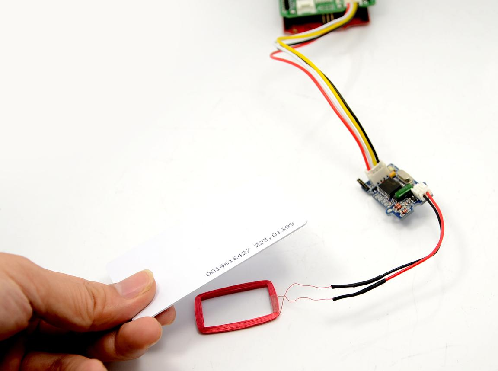
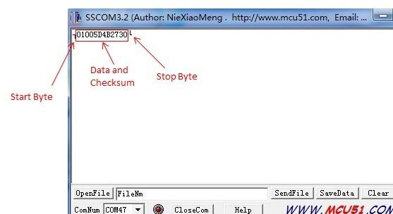

This Grove-125KHz RFID Reader is a module used to read uem4100 RFID card information with two output formats: Uart and Wiegand. It has a sensitivity with maximum 7cm sensing distance. There is also the electronic brick version of this module. It can help you with project like internet of thing and access control system.
And you should use these module below while using RFID reader:

Here we show how to read RFID information using the Grove - 125KHz RFID Reader. Connect Grove - 125KHz RFID Reader to UART of Grove - Base Shield.

You would need to select the jumper to "U" to enter this mode, and the setting is: 9600bps, N, 8, 1, TTL output
// link between the computer and the SoftSerial Shield //at 9600 bps 8-N-1 //Computer is connected to Hardware UART //SoftSerial Shield is connected to the Software UART:D2&D3 #include <SoftwareSerial.h> SoftwareSerial SoftSerial(2, 3); unsigned char buffer[64]; // buffer array for data receive over serial port int count=0; // counter for buffer array void setup() { SoftSerial.begin(9600); // the SoftSerial baud rate Serial.begin(9600); // the Serial port of Arduino baud rate. } void loop() { if (SoftSerial.available()) // if date is coming from software serial port ==> data is coming from SoftSerial shield { while(SoftSerial.available()) // reading data into char array { buffer[count++]=SoftSerial.read(); // writing data into array if(count == 64)break; } Serial.write(buffer,count); // if no data transmission ends, write buffer to hardware serial port clearBufferArray(); // call clearBufferArray function to clear the stored data from the array count = 0; // set counter of while loop to zero } if (Serial.available()) // if data is available on hardware serial port ==> data is coming from PC or notebook SoftSerial.write(Serial.read()); // write it to the SoftSerial shield } void clearBufferArray() // function to clear buffer array { for (int i=0; i<count;i++) { buffer[i]=NULL; } // clear all index of array with command NULL }
Open the Serial Monitor, the card information can be display as show below:

You would need to select the jumper to "W" to enter this mode.
The Wiegand demo code for Seeeduino is designed to read Wiegand data in interrupt mode.
In Wiegand Mode, output data is formatted with 26bits including 24bits card info and 2 bits parity.
| bit | 0 | 1 | 2 | 3 | 4 | 5 | 6 | 7 | 8 | 9 | 10 | 11 | 12 | 13 | 14 | 15 | 16 | 17 | 18 | 19 | 20 | 21 | 22 | 23 | 24 | 25 |
| - | PE | D | P0 | |||||||||||||||||||||||
| - | - | E | 0 | - | ||||||||||||||||||||||
| - | - | D2[7..0] | D1[7..0] | D0[7..0] | - | |||||||||||||||||||||
Take ID: 0009776930 for example: